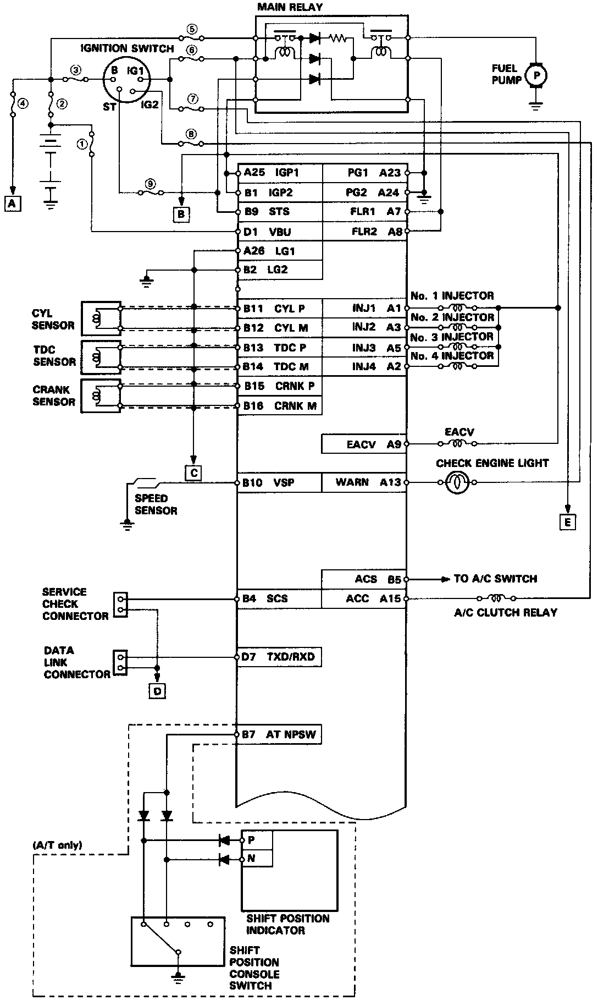
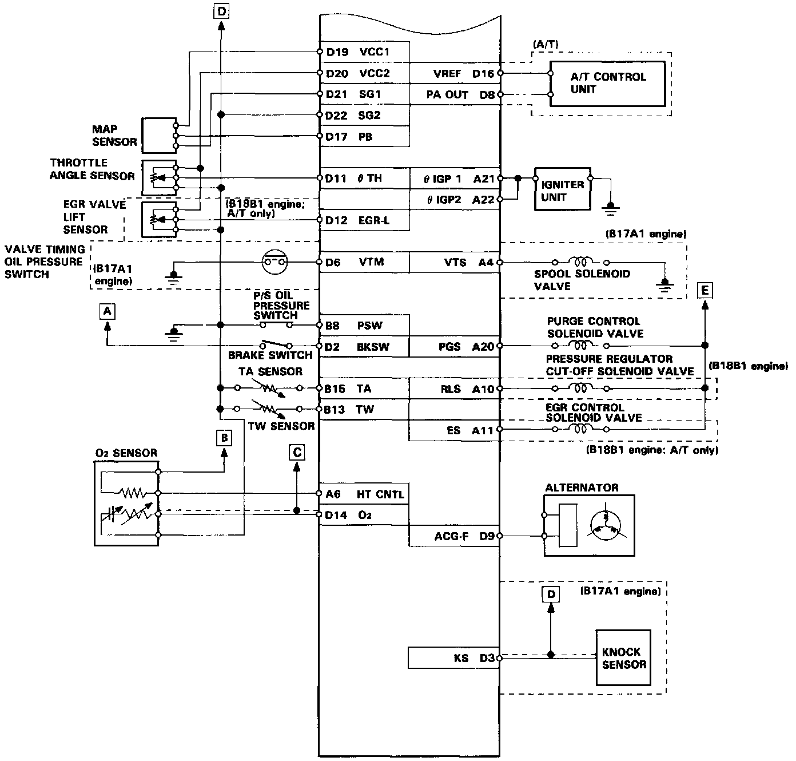
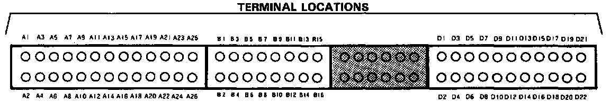

Control Unit Electrical Connections



FUSE ID
(1) BACK UP 17.5 A)*
(CANADA: HAZARD, BACK UP, 10 A)*
(2) BATTERY (80 A)*
(3) IG (50 A)*
(4) STOP, HORN (20 A)*
(5) ECU (10 A)*
(6) No. 24 (15 A)
(7) No. 23 (7.5 A)
(8) No. 17 (7.5 A)
(9) No. 18 (7.5 A)
*: In the under-hood fuse/relay box